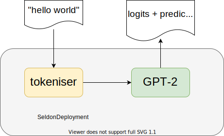

Custom pre-processors with the V2 protocol¶
Most of the time, the requests that we send to our model need some kind of processing. For example, extra information may need to be fetched (e.g. from a feature store), or processed, in order to obtain the actual tensors required by the model. One example for this use case are NLP models, where natural language needs first to be tokenised according to a vocabulary, or embedded by a 2nd model.
In this tutorial, we will focus on this latter scenario. In particular, we will explore how to deploy a tokeniser pre-transformer that converts our natural language text to tokens. This tokeniser will then be part of an inference graph, so that its output gets routed to a GPT-2 model deployed using Triton.
NOTE: The tokeniser logic and the Triton artifacts are taken from the GPT-2 Model example. To learn more about these, feel free to check that tutorial.
{kind=link}
Creating a Tokeniser¶
In order to create a custom pre-processing step, the first step will be to write a **custom runtime** using MLServer. MLServer is a production-grade inference server, whose main goal is to ease up the serving of models through a REST and gRPC interface compatible with the V2 Inference Protocol.
As well as an inference server, MLServer also exposes a framework which can be leveraged to easily write your custom inference runtimes.
These custom runtimes can be used to write any custom logic, including (you guessed it!) our tokeniser pre-processor.
Therefore, we will start by extending the base mlserver.MLModel class, adding our custom logic.
Note that this logic is taken (almost) verbatim from the GPT-2 Model example.
%%writefile tokeniser/runtime.py
import os
from mlserver import MLModel
from mlserver.types import InferenceRequest, InferenceResponse
from mlserver.codecs import NumpyCodec
from mlserver.codecs.string import StringRequestCodec, StringCodec
from transformers import GPT2Tokenizer
TOKENIZER_TYPE_ENV_NAME = "SELDON_TOKENIZER_TYPE"
TOKENIZER_TYPE_ENCODE = "ENCODER"
class Tokeniser(MLModel):
async def load(self) -> bool:
self._tokeniser = GPT2Tokenizer.from_pretrained("gpt2")
self._tokenizer_type = os.environ.get(TOKENIZER_TYPE_ENV_NAME, TOKENIZER_TYPE_ENCODE)
self.ready = True
return self.ready
async def predict(self, inference_request: InferenceRequest) -> InferenceResponse:
outputs = None
if self._tokenizer_type == TOKENIZER_TYPE_ENCODE:
sentences = StringRequestCodec.decode(inference_request)
tokenised = self._tokeniser(sentences, return_tensors="np")
outputs = []
for name, payload in tokenised.items():
inference_output = NumpyCodec.encode(name=name, payload=payload)
# Transformer's TF GPT2 model expects `INT32` inputs by default, so
# let's enforce them
inference_output.datatype = "INT32"
outputs.append(inference_output)
else:
logits = NumpyCodec.decode(inference_request.inputs[0])
# take the best next token probability of the last token of input ( greedy approach)
next_token = logits.argmax(axis=2)[0]
next_token_str = self._tokeniser.decode(
next_token[-1:], skip_special_tokens=True, clean_up_tokenization_spaces=True
).strip()
outputs = [StringCodec.encode("next_token", [next_token_str])]
return InferenceResponse(
model_name=self.name, model_version=self.version, outputs=outputs
)
Overwriting tokeniser/runtime.py
Note that the pre-processing logic is implemented in the predict() method.
At the moment, the MLServer framework doesn’t expose the concept of pre- and post-processing.
However, it’s possible to implement this is a “pseudo-model”, thus relying on the service orchestrator of Seldon Core, who will be responsible of chaining the output of our tokeniser to the next model.
Requirements and default model settings¶
Besides writing the logic of our custom runtime, we will also need to provide the extra requirements that will be used by our environment.
This can be done through a plain requirements.txt file.
Alternatively, for a finer control, it’d also be possible to leverage Conda’s environment files to specify our environment.
%%writefile tokeniser/requirements.txt
mlserver==1.0.1
transformers==4.12.3
Overwriting tokeniser/requirements.txt
On top of this, we will also add a model-settings.json file with the default settings for our model.
MLServer uses these files to provide extra configuration (e.g. number of parallel workers, adaptive batching configuration, etc.) for each model.
In our case, we will use this file to tell MLServer that it should always use our custom runtime by default and name our models as tokeniser (unless other name is specified).
%%writefile tokeniser/model-settings.json
{
"implementation": "runtime.Tokeniser"
}
Overwriting tokeniser/model-settings.json
Testing our tokeniser¶
- NOTETo test our custom runtime locally, we will need to install the same set of dependencies that will be bundled and deployed remotely.
To achieve this, we can re-use the environment that was described on the previous section:
pip install -r ./tokeniser/requirements.txt
Since we’re leveraging MLServer to write our custom pre-processor, it should be easy to test it locally. For this, we will start MLServer using the ``mlserver start` subcommand <https://mlserver.readthedocs.io/en/latest/reference/cli.html#mlserver-start>`__. Note that this command has to be carried out on a separate terminal:
mlserver start ./tokeniser
We can then send a test request using curl as follows:
%%bash
curl localhost:8080/v2/models/tokeniser/infer \
-H 'Content-Type: application/json' \
-d '{"inputs": [{"name": "sentences", "datatype": "BYTES", "shape": [1, 11], "data": "hello world"}]}' \
| python -m json.tool
As we can see above, the input hello world gets tokenised into [31373, 995], thus confirming that our custom runtime is working as expected locally.
Building the image¶
Once we have our custom code tested and ready, we should be able to build our custom image by using the ``mlserver build` subcommand <https://mlserver.readthedocs.io/en/latest/reference/cli.html#mlserver-build>`__.
This image will be created under the gpt2-tokeniser:0.1.0 tag.
%%bash
mlserver build ./tokeniser --tag seldonio/gpt2-tokeniser:0.1.0
Deploying our inference graph¶
Now that we have our custom tokeniser built and ready, we are able to deploy it alongside our GPT-2 model.
This can be achieved through a SeldonDeployment manifest which links both models.
That is, our tokeniser, plus the actual GPT-2 model.
As outlined above, this manifest will re-use the image and resources built in the GPT-2 Model example, which is accessible from GCS.
NOTE: This manifest expects that the
gpt2-tokeniser:0.1.0image built in the previous section is accessible from within the cluster where Seldon Core has been installed. If you are using ``kind` <https://docs.seldon.io/projects/seldon-core/en/latest/install/kind.html>`__, you should be able to load the image into your local cluster with the following command:kind load docker-image gpt2-tokeniser:0.1.0
%%writefile seldondeployment.yaml
apiVersion: machinelearning.seldon.io/v1
kind: SeldonDeployment
metadata:
name: gpt2
spec:
protocol: v2
predictors:
- name: default
graph:
name: tokeniser-encoder
children:
- name: gpt2
implementation: TRITON_SERVER
modelUri: gs://seldon-models/triton/onnx_gpt2
children:
- name: tokeniser-decoder
componentSpecs:
- spec:
containers:
- name: tokeniser-encoder
image: seldonio/gpt2-tokeniser:0.1.0
env:
# Use always a writable HuggingFace cache location regardless of the user
- name: TRANSFORMERS_CACHE
value: /opt/mlserver/.cache
- name: MLSERVER_MODEL_NAME
value: "tokeniser-encoder"
- name: tokeniser-decoder
image: seldonio/gpt2-tokeniser:0.1.0
env:
- name: SELDON_TOKENIZER_TYPE
value: "DECODER"
# Use always a writable HuggingFace cache location regardless of the user
- name: TRANSFORMERS_CACHE
value: /opt/mlserver/.cache
- name: MLSERVER_MODEL_NAME
value: "tokeniser-decoder"
Overwriting seldondeployment.yaml
The final step will be to apply this manifest into the cluster, where Seldon Core is running.
For example, to deploy the manifest into the models namespace, we could run the following command:
!kubectl apply -f seldondeployment.yaml
seldondeployment.machinelearning.seldon.io/gpt2 configured
Testing our deployed inference graph¶
Finally, we can test that our deployed inference graph is working as expected by sending a request.
If we assume that our cluster can be reached in localhost:8003, we can send a request using cURL as:
%%bash
curl localhost:80/seldon/default/gpt2/v2/models/infer \
-H 'Content-Type: application/json' \
-d '{"inputs": [{"name": "sentences", "datatype": "BYTES", "shape": [1, 11], "data": ["Seldon Technologies is very"]}]}'
{"model_name":"tokeniser-decoder","model_version":null,"id":"6f952cc2-3648-4180-bd70-163a731bdb86","parameters":null,"outputs":[{"name":"next_token","shape":[1],"datatype":"BYTES","parameters":null,"data":["pleased"]}]}
% Total % Received % Xferd Average Speed Time Time Time Current
Dload Upload Total Spent Left Speed
100 334 100 219 100 115 27 14 0:00:08 0:00:08 --:--:-- 57
As we can see above, our plain-text request is now going successfully through the tokeniser, acting as a pre-processor, whose output then gets routed to the actual GPT-2 model.